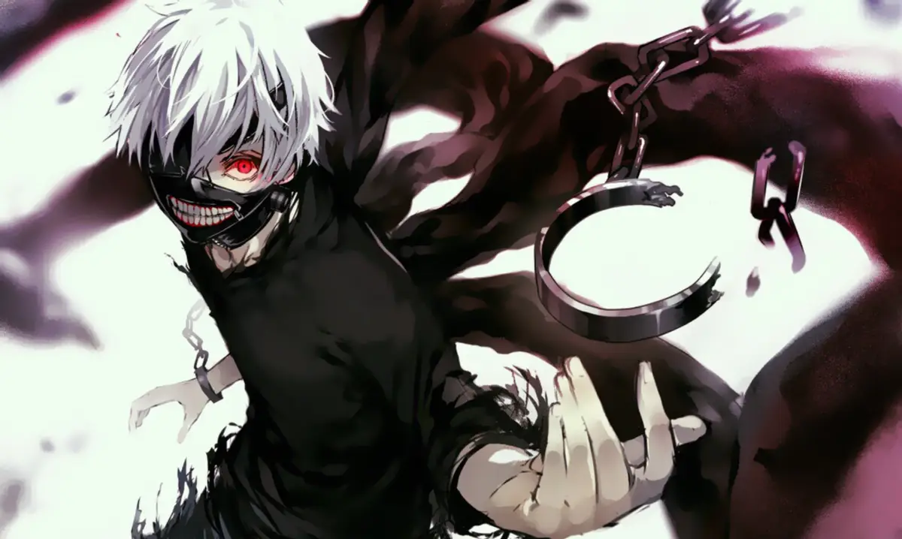

剧情大纲：
《东京喰种》
漫画第一部故事。
在日本东京街头，一切成谜的吃人怪兽“喰种”正悄悄地向人类世界扩张势力。
一名平凡大学生金木研有一次因为遭到喰种猎食而性命垂危，医生为他进行了器官移植手术，怎料器官提供者其实就是猎食他的喰种。在病床上醒来的金木很快就感觉到身体不对劲，最终意识到自己已成了独眼喰种，身体只吃得下人肉，因此陷入绝望，所幸一家喰种开的咖啡厅收留了他。为了保护同伴，金木与喰种对策局（CCG）的搜查官战斗，并击退其他凶恶的喰种，在过程中变得越来越强。最终，咖啡厅的店长芳村被CCG视为讨伐目标“枭”，咖啡厅被迫停止营业，金木试图拯救店长，但被“不败的搜查官”有马贵将击败。
《东京喰种:re》
漫画第二部故事。
漫画第一部《东京喰种》的结尾中，刚成为CCG三等搜查官的佐佐木琲世，跟随真户晓学习一等搜查官的搜查技术。两年后，佐佐木已成为一等搜查官，并且是“昆克斯班”的指导者，带领着四名下属进行各种搜查工作。
佐佐木上等在讨伐月山集团时觉醒，击败了独眼枭，成为准特等搜查官，并离开昆克斯班，加入有马班。
恢复金木研身份的佐佐木为了救出被关在库克利亚的雏实，只身面对“不败的搜查官”，击败有马贵将后创立了新的喰种集团“黑山羊”，并成为了新的“独眼之王”。在“黑山羊”被歼灭后，由于其理念作为影响“黑山羊”和CCG时期的同僚，进而促成CCG和“黑山羊”组成联合作战的同盟“共同战线”对抗主谋和修旧多、组织“V”和“小丑”，金木研则前往位于地底的巨大迷宫“24区”独自面对和修之龙，亲自终结“V”组织和“小丑”的阴谋。
“龙战”落幕的六年后，CCG东京分部重新组织为“TCG（东京保安委员会Tokyo Security Committee）”；昔日CCG成员和“黑山羊”组成联合作战的同盟“共同战线”，成为促进人类和喰种平等共处合作的核心组织；金木研为持续实践人类和喰种平等共处的理念，担任“共同战线”的协助者，最终和妻子董香共组家庭。